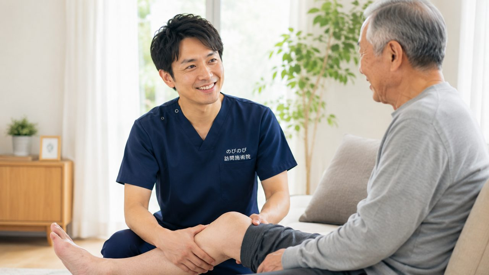

腰の痛みが何か月も続き、立ち座りや歩き始めがつらい。でも通院そのものが体にこたえて足が遠のく。そんなご相談をよくいただきます。長く続く腰痛症は、医師が治療の必要を認めれば、はり・きゅうで医療保険が使える対象の一つです。ご自宅にうかがい、通院の負担なく受けられます。保険が使える条件と料金、そして施術より先に医療機関へ行ったほうがよい腰の痛みの見分け方まで、順を追ってお伝えします。
はじめに要点だけ。長引く腰痛症は、はり・きゅうの療養費で対象となる代表的な病名の一つです。医師が同意書を書き、通院がむずかしければ、訪問鍼灸を医療保険で受けられます。1回の施術は総額3,950円、自己負担は1割でおよそ395円。週1回ならひと月1,580円ほどが目安です。ただし、じっとしても激しく痛む、足に力が入らない、発熱や排尿・排便の異常をともなうときは、まず医療機関へ。鍼灸がお手伝いできるのは、原因がはっきりして落ち着いた慢性の腰痛です。
高齢のご家族に多い、慢性の腰痛症
朝、布団から起き上がろうとして腰がこわばる。しばらく同じ姿勢で座っていると、じわじわ重だるさが広がる。立ち上がるとき、前かがみになるときに、ふいに痛む。年齢を重ねた方の腰痛は、こうした場面ごとの違和感として現れることが多いものです。
背骨まわりの組織は、加齢とともに少しずつ弾力を失います。支える筋力も落ちていきます。やっかいなのは、こわばりが悪循環を生むことです。動かしづらいから動かさなくなり、動かさないからいっそう固まる。痛みをかばう日々が続くうちに、腰痛症は静かに慢性化していきます。
鍼灸の前に、受診をおすすめしたい腰の痛み
ただし、長引く腰痛のすべてが、そのまま施術で向き合ってよいものとは限りません。次のようなサインがあるときは、はり・きゅうより先に医療機関で診てもらってください。
足のしびれや力の入りにくさ、排尿・排便の異常、じっとしていても強まる痛み、発熱をともなう腰痛。あるいは、がんなどの既往がある場合や、転倒したあとの激しい痛み。これらは単なる慢性腰痛とは分けて考えるべきものです。背景に別の原因がひそんでいることがあり、まずは検査で確かめる必要があります。
そうした心配な兆候がなく、長く付き合ってきた腰の重だるさやこわばりであれば、療養費による訪問鍼灸が支えになります。
腰痛症は、はり・きゅうの医療保険で受けられます
あまり知られていませんが、腰痛症は、はり・きゅうの療養費（医療保険）の対象となる代表的な6つの疾病のひとつです。神経痛、リウマチ、頸肩腕症候群、五十肩、そして腰痛症、頸椎捻挫後遺症。腰痛症はこの中にきちんと含まれていますから、条件を満たせば保険で施術を受けられます。
必要なのは、医師の同意書です。要介護認定を受けているかどうかは問いません。介護保険を使っている方でも、その限度額とは別枠のあつかいになりますから、デイサービスや訪問介護の回数を削らずに済みます。同意書の取り付けは院がお手伝いします。ご家族だけで抱え込む必要はありません。
1回の料金と、月ごとのおおよその目安
気になる費用の話をします。はり・きゅうの1回の施術は総額3,950円で、ここに保険が効きます。1割負担の方なら1回およそ395円、2割の方で790円、3割の方で1,185円という計算です。
週2回のペースで続けた場合、1割負担で月あたりおよそ3,160円が目安になります。通院にかかる交通費や付き添いの手間を思えば、この負担は決して重いものではありません。回数や間隔はお体の状態に合わせて相談で決めますので、無理のない範囲から始められます。
はり・きゅうでできること、医療にゆだねること
施術で目指すのは、こわばった筋肉をゆるめ、血のめぐりを促すことです。腰まわりが軽くなれば、寝返りや起き上がりの動きやすさにつながっていきます。ただし効果には個人差があり、これをすれば必ず治る、と言い切れるものではありません。あくまで医療が主で、鍼灸はそれを補う立場です。
骨や神経そのものの問題は、医療機関の領域になります。なお、同じ部位について、医療保険のリハビリと鍼灸を同じ時期に算定することはできません。すでにリハビリを受けている場合は、その点も含めてご相談ください。
腰だけをみない、訪問だからできる見立て
腰が痛むとき、原因が腰そのものにあるとは限りません。股関節のかたさ、背中の丸まり、片側にかたよった立ち方。全身のつながりのなかで、負担が腰に集まっているだけ、ということがよくあります。ご自宅にうかがう施術では、ふだんの動きや寝具、椅子の高さまで目に入るぶん、痛みの背景を丁寧に読み解けます。
通院をやめて、自宅でいたわるという選択
痛む腰で電車やバスに乗り、待合室で順番を待つ。それ自体が、高齢の方には大きな負担です。国家資格を持つ施術者がご自宅までうかがいますから、その往復がまるごとなくなります。サービスエリア内であれば出張費はかかりません。関節を動かす機能訓練も鍼灸に加えて行うもので、追加料金は生じません。
あわせて、暮らしのなかの工夫も少しだけ。腰は冷やさず温める、同じ姿勢を長く続けない、痛みのない範囲で毎日少し体を動かす。こうした習慣が、施術の効果を下支えします。「歳のせい」で片づけてしまう前に、できることはまだ残っています。
よくある質問
腰痛でも保険で受けられますか？
長く続く腰痛症は、はり・きゅうの対象となる代表的な病名の一つです。医師が治療の必要を認めて同意書を書き、通院がむずかしければ、医療保険で受けられます。自己負担は1割でおよそ1回395円が目安です。
1回いくらかかりますか？月にするとどのくらいですか？
1回の施術は総額3,950円で、1割負担なら約395円、2割で約790円、3割で約1,185円です。続けて受ける場合、1割の方で週1回ならひと月およそ1,580円、週2回で約3,160円、週3回で約4,740円が目安になります。
ぎっくり腰のような急な痛みでも受けられますか？
急に強く痛むときや、足のしびれ・力が入らないなどをともなうときは、まず医療機関を受診してください。鍼灸がお手伝いできるのは、原因がはっきりして落ち着いた慢性的な腰の痛みです。診断がついてからのご相談だと安心です。
どんなときは施術より先に病院へ行くべきですか？
安静にしても激しく痛む、発熱をともなう、足に力が入らない・しびれが強い、尿や便の異常がある、転倒のあとに強く痛む。こうした場合は、まず整形外科など医療機関を受診してください。骨や神経の問題が隠れていることがあります。
鍼灸で腰痛は治りますか？
鍼灸は、こわばった筋肉を和らげ血のめぐりを促して、痛みや重だるさを楽にすることが期待できます。ただし骨や神経そのものの問題を治せるわけではなく、医療の治療が主、鍼灸は補助という関係です。効き方には個人差があります。
週に何回くらい受けるものですか？
お体の状態やご希望によります。無理なく続けられる回数を一緒に相談して決めます。介護保険の区分支給限度額とは別の枠なので、デイサービスやヘルパーとの兼ね合いとは別に組み立てられます。
交通費や出張費は別にかかりますか？
エリア内であれば、別途の出張費（出張料・交通費）はかからず、どこでも同額です。お支払いは月ごとにまとめてお願いしています。内訳はあとからでも確認できます。
対応しているエリアはどこですか？
大阪府は豊中市・吹田市・茨木市・高槻市・箕面市・摂津市・池田市、大阪市は淀川区・東淀川区・都島区・北区・旭区、兵庫県は尼崎市・伊丹市にうかがっています。保険が使えるかどうかを含め、まずはご相談ください。